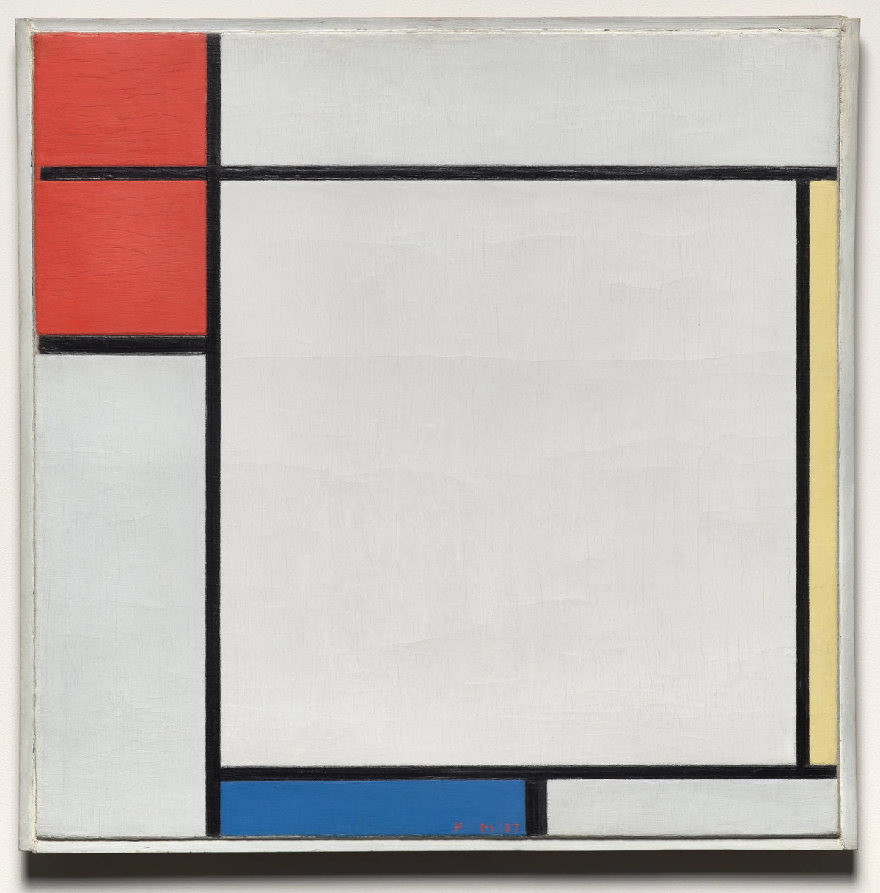

同じ三原色でも、面積はそろえない。
左上の赤い領域、右端の細い黄、下端の青は、異なる広さと位置を占めています。色を均等に並べるのではなく、白い面とともに画面の釣り合いを作ります。
本文試作・実作品画像1点収録 / 代表画像セットは整備中 · 2026-11-01
雑誌を核とした運動
De Stijl
LOOK AT THE WORK / 実作品を見る

画像を表示できませんでした。下の所蔵元リンクから作品を確認できます。
DE STIJL / PAINTING · 1927
Piet Mondrian / The Cleveland Museum of Art
Cleveland Museum of Art所蔵1967.215、1927年、油彩・カンヴァス。灰色の額を含む全体を表示しています。同名・類似題の1930年作とは別作品です。
左上の赤い領域、右端の細い黄、下端の青は、異なる広さと位置を占めています。色を均等に並べるのではなく、白い面とともに画面の釣り合いを作ります。
太い黒線が直角に交わり、大きな白い領域を囲みます。中心を左右対称に分ける構図ではなく、線の位置と区画の比率に注目できます。
白や赤の面には筆の動きや絵具の質感が見え、下の青い部分にはPM ’27の署名があります。灰色の額を含めて掲載し、画像を均一な色の図へ置き換えていません。
色・線・表面は取得画像の観察です。代表例としての選定は、館の造形説明と当該作品の「Mondrian / De Stijl」展覧会歴に基づく編集判断で、唯一の最高傑作という主張ではありません。
Piet Mondrian, Composition with Red, Yellow, and Blue, 1927. The Cleveland Museum of Art, Contemporary Collection, 1967.215. CC0.
所蔵元の個別作品記録 ↗原作品：CMAの個別Public Domain判断。公開デジタル画像：個別CC0指定とOpen Access方針。確認日 2026-11-01。
公式配信の原JPEGは無加工で保持し、拡大リンクから取得できます。ページ表示には縦横比と全画面を保った縮小WebPを使用（切り抜き・色補正なし）。原JPEGと各表示画像のサイズ・SHA-256を権利台帳に別記録。撮影者名は未確認のため推定しません。
美術館のOpen Access方針 / CC0 / 収録画像の権利台帳
所蔵館の個別公開指定とCC0方針に基づきます。全法域の権利保証や美術館の推奨を意味しません。
線や色の面を組み合わせると、絵も家具も建物も、同じ問いで考えられるのでしょうか。デ・ステイルは、絵画だけでなく、家具、建築、文字や印刷物にも新しい組み立て方を求めた運動です。平らな面と線、色のついた面の関係から、一つのものにとどまらず、周りの空間まで考えました。
雑誌と、作家どうしのつながりが大切な役割を果たしました。モンドリアン（Mondrian）一人の絵画が、そのまま運動全体を表すわけではありません。それぞれの作家が、後にどう制作を進めたかも分けて見ます。
以下は観察のための問いです。すべての作品に共通する固定ルールや、未取得画像の実見結果ではありません。
すべての作品が、最初から赤・黄・青に決まっていたわけではありません。アムステルダム国立美術館（Rijksmuseum）は、ファン・ドゥースブルフ（Van Doesburg）の室内の配色案を紹介しています。1919年の室内では青・緑・赤が使われました。後の出版に向けて赤・黄・青へと組み直したものとは、区別して説明されています。
水平な線と垂直な線をどう組み合わせたかに注目します。文字も、図形を組み立てるように設計されています。
直角に交わる線、離れた面、長方形の部品を探します。斜めの線を使うかどうかにも、作家や作品による違いがあります。
左右対称ではなくても、つり合って見えるのはなぜでしょう。家具や建築では、一つの面が周りの空間へ伸びていくような関係を見ます。
作品の知名度や画像の入手しやすさだけで選びません。以下は理想代表候補と、その検証状況です。画像の利用許諾を確認できていないものは掲載していません。
絵画
色の面と、直角に交わる線で表す抽象画（ちゅうしょうが。具体的な物の姿ではなく、色や形などで表す絵）です。家具や建築と比べるために、平らな画面での例として選んでいます。
対象はMoMA 486.1941です。カンヴァスに油絵の具で描かれ、大きさは40.3 × 32.1 cmです。館は制作年を1929年としています。もとの日付が一部消えたため、作者が誤って1925年と書き直したという注記があります。画面に書かれた年だけで、制作年は決めません。似た題名の別作品や、この絵を含む展示会場の写真とも区別します。
個別の根拠資料 ↗家具
水平・垂直の部品と平らな面、その間の空間が椅子をつくっています。館は、当時の規格材を使ったわかりやすい構造と、量産を目指したことも説明しています。色だけを借りた今の飾りとは区別して見ます。
対象はMoMA 487.1953です。塗装した木材でできており、大きさは86.7 × 66 × 83.8 cmです。1918年の設計と、後に加えられた配色は区別します。Centraal Museum 26106は別の椅子です。1918年設計、1925年頃製作で、実際につくった人はGerard A. van de Groenekanとされています。同館12577も別の椅子で、館は1918年製作、1923年着色と注記しています。これらの製作者、寸法、年をMoMAの椅子に当てはめません。
個別の根拠資料 ↗建築構想
MoMAは、色のついた平面の部品が、空いた中心の周りで、左右対称ではないつり合いをつくる案と説明しています。絵画、彫刻、建築を一つにしようとした考え方を見る例です。
実際に完成した住宅ではありません。建てられなかった住宅を立体的に示した、軸測図（じくそくず）です。完成した建物の写真の代わりには使いません。
個別の根拠資料 ↗出版・グラフィック
運動と同じ名前の刊行物を見ます。作品だけでなく、出版や話し合いを通じて育った運動だということを示す例です。
対象はMoMA 672.1999です。オフセット・リトグラフという印刷方法で、大きさは22.4 × 14.8 cmです。Jan Tschichold Collectionに含まれ、Philip Johnsonから寄贈されました。公開情報では、何号・何巻の何頁かをまだ確認できていません。作品年が1917年でも、創刊号や冊子全体と断定しません。後の表紙、別の号、復刻版とも区別します。
個別の根拠資料 ↗室内色彩案・コラージュとグアッシュ
色の面を室内へ広げ、その後、出版に向けて組み直した例です。「いつも三原色だった」というイメージと、実際の作品が変わっていく様子を比べられます。
大きさは265 × 210 mmです。1919年の室内計画、今残る紙の作品の年代、1925年の出版は区別します。変更前の室内をそのまま写した写真ではありません。画像はまだ取得しておらず、実際に見てもいません。
個別の根拠資料 ↗絵画・直交する線と色面
館は水平・垂直の組み立て方と三原色を説明し、この作品がデ・ステイルの展覧会に出た記録も示しています。実際の作品の形と、運動とのつながりを一緒に見られる代表例として選びました。
対象はCMA 1967.215です。すでに候補にしているMoMA 486.1941の1929年作とも、似た題名の1930年作とも別の作品です。まず公開する代表画像1点であり、家具・建築・出版を比べる画像セットはまだ完成していません。
個別の根拠資料 ↗COMPARE
バウハウスは学校、デ・ステイルは運動です。円や四角などを使う見た目が似ていても、活動の仕組み、目指したこと、つくる目的は違います。
項目を横に並べる ↗READ TODAY
モジュール（組み合わせて使う基本の単位）、色の面、左右対称ではないつり合い。これらは、今のデザインを比べるときにも役立つ見方です。ただし、直接考え方を受け継いだ場合と、見た目が似ている場合は分けて考えます。
概要は以下の所蔵機関・制作者の説明と、分析者自身の調査を参照。検索から返却された本文とページ直接閲覧は調査台帳で区別しています。代表作の個別裏付け、実画像取得、作品と写真の商用条件は別々の確認事項です。
この項目の収録実画像：1点（図鑑全体：27点）。参照・関連実作品はこの項目0点（図鑑全体2点）。代表作品画像セットの数には含めません。